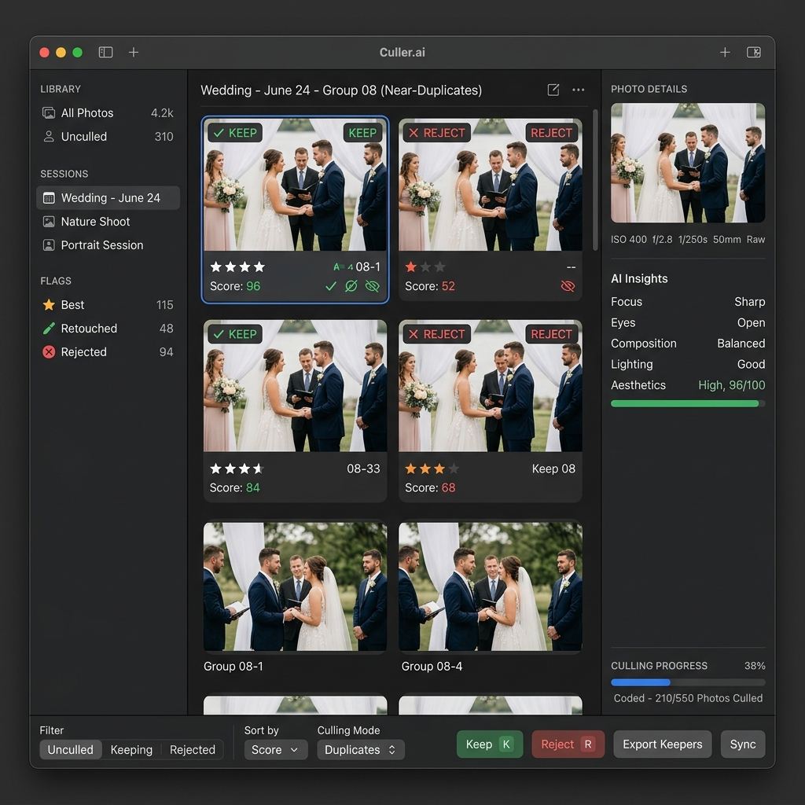

Stop spending hours manually sorting and grading thousands of photos. Culler.ai is a privacy-first macOS app that clusters duplicates, detects defects, and rates your shots instantly—directly on your device.

Culling is the most tedious bottleneck in a professional photographer's workflow.
Wedding and event shoots result in thousands of RAW images. Sifting through every photo to select keepers is an exhausting chore.
Constantly comparing almost-identical photos to select the single best frame drains your energy, slowing down the editing stage.
It's easy to miss micro-imperfections like closed eyes, slight motion blur, or sub-optimal facial expressions until the final export.
Importing, flagging, and moving files across different editing suites like Capture One and Lightroom causes unnecessary friction.
We leverage Apple Silicon and native frameworks to analyze your photo library locally with zero cloud dependencies.
Groups photos into visual "stacks" using cosine similarity on high-dimensional feature print embeddings, keeping your workspace clean and categorized.
Runs local Laplacian variance edge detection for tack-sharp focus evaluation, alongside blink detection (Eye Aspect Ratio) and aesthetic grading.
Grades photo quality into a standardized 5-star scale, automatically promoting the highest quality "stack leaders" while downgrading redundant duplicates.
Culler.ai is built to fit seamlessly into professional workflows, supporting high-fidelity RAW files, standard images, and sidecar metadata.
Process native RAW files from major camera systems without pre-conversion:
Fast, high-performance loading and processing of compressed assets:
Seamless rating synchronizations to keep editing suites in lockstep:
Automatically reads existing star ratings and exports finalized grades back directly to the sidecars.
Because this is an early alpha release distributed directly through GitHub, the application is ad-hoc signed and has not yet undergone Apple's official App Store notarization check.
You can easily skip this security quarantine block using one of the three following methods to register a system-wide developer exemption:
Control-click (or right-click) the Culler.ai.app bundle in Finder, select Open, and click the confirmation dialog's Open button. macOS saves this choice automatically.
Open the app once. When the popup blocks you, go to macOS System Settings > Privacy & Security, scroll down to the Security category, and click Open Anyway.
If you prefer using the terminal, clear the system quarantine metadata flag directly (assuming the app is in your `/Applications` directory):